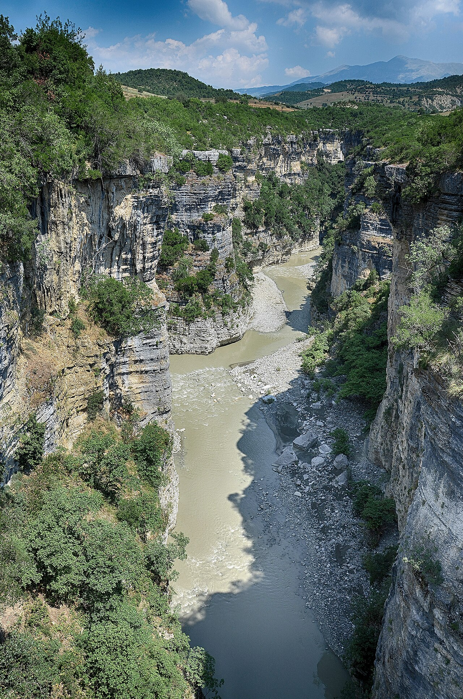
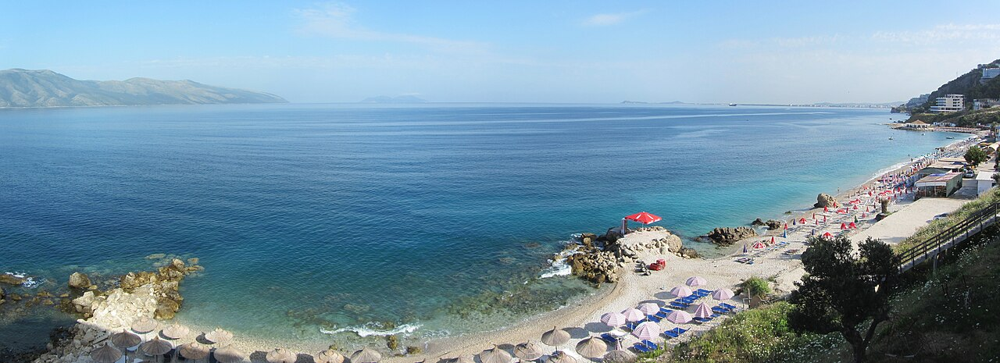
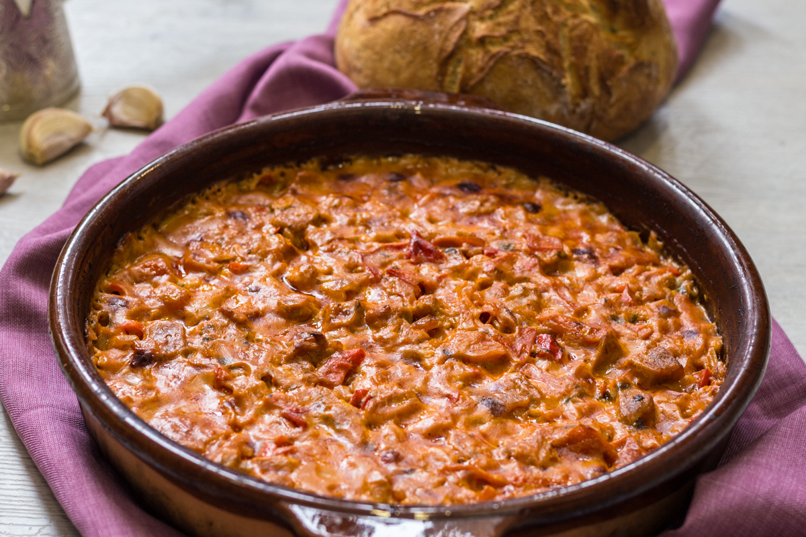

Keturių dienų žiedinė kelionė po Albaniją: pradedame ir baigiame Tiranos oro uoste. Pakeliui – Krujės pilis, Belšo ežeras, Berato senamiestis ir pilis, Osumo kanjonas, Vlorės/Radhimės pakrantė ir Karavastos–Divjakės lagūna su pelikanais. Žemiau – diena po dienos maršrutas, vairavimo info, orų prognozė, maistas, nuomos automobilio pasiūlymai ir planas B blogam orui.
1 diena · spalio 30, penktadienis
Atvykimas į Tiraną
Atskridus iš Varšuvos, pirmiausia atsiimkite bagažą ir nuomos automobilį. Iki miesto centro važiuoti apie 25–30 minučių, kelias tiesus ir naktį ramus.

Nakvynė pačiame miesto centre – prieš miegą verta trumpam nueiti iki Skanderbego aikštės, Et'hem Bėjaus mečetės ir laikrodžio bokšto, kurie vakarais gražiai apšviesti. Automobilį patogiausia palikti mokamoje aikštelėje ar viešbučio parkavimo vietoje, nes centro gatvėse laisvų vietų mažai. Iš vakaro pasitikslinkite su viešbučiu vėlyvo įsiregistravimo laiką.

2 diena · spalio 31, šeštadienis
Tirana → Krujė → Belšo ežeras → Beratas
Ryto pradžia mieste – po pusryčių keliaukite į Krujės pusę (apie 50 min), toliau tęsite į Belšo ežerą ir Beratą. Automobilį iš nakties parkavimo atsiimkite laiku, kad išvengtumėte ryto spūsčių centre.
Trumpas, bet įdomus stabtelėjimas – Krujės pilis su Skanderbego muziejumi ir senasis bazaras su vietiniais amatininkų dirbiniais. Automobilį palikite pilies papėdės aikštelėje, į pilį užlipti reikia pėsčiomis.

Kavos pertraukėlė prie Belšo ežero – ramus kraštovaizdis pusiaukelėje į Beratą. Sustojimas trumpas, toliau keliaukite be skubėjimo, kad į Beratą pataikytumėte piet metu.

Pietų pertrauka Mangalemo kvartale, netoli senamiesčio – vietinė virtuvė ir gražus vaizdas į upę bei pilies kalvą. Automobilį palikite apatinėje aikštelėje, senamiesčio gatvelės siauros ir netinkamos važiavimui.

Po pietų pasivaikščiokite po Mangalemo kvartalą ir užlipkite iki pilies – įspūdingi vaizdai į visą miestą ir upės slėnį. Automobilį geriausia palikti apačioje, senamiesčio gatvelės siauros.

Nusileiskite nuo pilies prie upės ir pereikite Goricos tiltą, jungiantį Mangalemo ir Goricos kvartalus – saulei leidžiantis apie 16:30–17:00 vaizdas į pilį ir senamiestį nuo tilto ypač gražus. Tiltas pėsčiųjų, automobilis lieka senamiesčio aikštelėje.

Grįžkite į nakvynės vietą senamiestyje – vakarienei čia pat Mangalemo ar Goricos kvartaluose daug vietinių užeigų. Kitą rytą po pusryčių keliaukite į Osumo kanjoną ir toliau per Vlorę į Llogaros perėją bei nakvynei pakrantėje.

🌧 Planas B (jei blogas oras)
Jautru orui: Krujės pilies apžvalga, kavos pertraukėlė lauke prie Belšo ežero, pasivaikščiojimas po Berato pilies teritoriją ir atvirą Goricos tiltą – lietuje ar vėjyje šie sustojimai praranda prasmę arba tampa pavojingi (slidūs akmenys, atviras pėsčiųjų tiltas).
Lietaus planas: Beratas – muziejai ir vyno degustacija vietoj lauko pasivaikščiojimų
🚗 Viso vairavimo: apie 178 min.
🧭 Plano B maršrutas Google Maps💡 Çobo vyno ūkis dirba kasdien 9:00–17:30, grupei rekomenduojama paskambinti iš anksto; Onufri muziejus šeštadieniais žiemą dirba 9:00–16:00 – planuokite apsilankymą iki 15:30.
Diena baigiasi tame pačiame Berato senamiestyje (DD Villa), kaip ir pagrindiniame plane.
3 diena · lapkričio 1, sekmadienis
Beratas → Osumo kanjonas → Vlorė/Radhimė pakrantė
Po pusryčių išvykstame Osumo kanjono kryptimi SH72 keliu – kelionė iki apžvalgos aikštelės užtruks apie 57 min., toliau keliaukite į Vlorę/Radhimę.
Graži Osumo kanjono apžvalga tiesiai nuo SH72 kelio, netoli Berato. Automobilį palikite aikštelės prieigose, takelis į apžvalgos punktą trumpas, bet vietomis akmenuotas – avėkite patogią avalynę.

Pietūs paplūdimio restorane čia pat prie nakvynės vietos – vietiniai žuvies patiekalai su vaizdu į jūrą.

Visą popietę ir vakarą galėsite atsipalaiduoti paplūdimyje, prie pat nakvynės vietos, su nemokamu parkavimu – saulėlydis čia nuostabus. Vakarienei pasivaikščiokite palei promenadą centriniame Vlorės rajone.

🌧 Planas B (jei blogas oras)
Jautru orui: Osumo kanjono apžvalgos aikštelė su akmenuotu takeliu yra atvira vėjui ir lietui – šlapia ir slidu; visa popietė paplūdimyje prie Hotel Liro praranda prasmę lyjant ar pučiant vėjui.
Lietaus planas: Apolonija ir Vlorės muziejus vietoj Osumo kanjono ir paplūdimio
🚗 Viso vairavimo: apie 111 min.
🧭 Plano B maršrutas Google Maps💡 Vlorės muziejų aplankykite PRIEŠ pietus – sekmadieniais jis dirba tik 10:00–14:00 ir pietų metu jau būtų uždarytas.
Diena baigiasi tame pačiame Vlorės/Radhimės pakrantės nakvynės taške (Hotel Liro), kaip ir pagrindiniame plane.
4 diena · lapkričio 2, pirmadienis
Divjakės–Karavastos lagūna → Tiranos oro uostas
Po pusryčių išvykstame į Divjakės–Karavastos nacionalinį parką pakrantės keliu (apie 1 val. 30 min).
Apžvalgos bokštas su plačiu vaizdu į Karavastos lagūną – gera vieta stebėti rausvuosius pelikanus ir kitus paukščius. Trumpas takas aplink lagūną, patogi avalynė pravers. Automobilį palikite parko aikštelėje ir čia pat pasilikite pietums.

Pietūs žuvies restorane čia pat prie parko įėjimo, prie lagūnos – vietiniai jūros gėrybių patiekalai ramioje aplinkoje.

Nuo Karavastos važiuokite į oro uostą (apie 2 val.) – kelias ramus. Su gera atsarga grąžinkite nuomos automobilį ir registruokitės skrydžiui TIA→WAW (19:05) – iki skrydžio liks apie 3 valandas, tad skubėti nereikės.

🌧 Planas B (jei blogas oras)
Jautru orui: Karavastos lagūnos apžvalgos bokštas ir takas aplink lagūną yra visiškai atviri vėjui ir lietui – paukščių stebėjimas lietuje beprasmis, o bokštas gali būti pavojingas stipriame vėjyje.
Lietaus planas: Tirana – Bunk'Art 2 vietoj Karavastos lagūnos
🚗 Viso vairavimo: apie 162 min.
🧭 Plano B maršrutas Google Maps💡 Bunk'Art 2 dirba kasdien, taip pat pirmadieniais, 9:30–18:30 – idealus pasirinkimas paskutinei, galimai lietingai dienai prieš skrydį.
Diena baigiasi tame pačiame Tiranos oro uoste, kaip ir pagrindiniame plane.
🗺️ Žemėlapis
☁️ Orų prognozė
Žemiau pateiktas tipiškas šio laikotarpio oras šiose vietose (daugiamečiai vidurkiai) – tiksli prognozė konkrečioms dienoms atsiras maždaug 2 savaitės prieš kelionę.
1 diena · Tirana (centras)
2026-10-30 · Dažniausiai sausa
🌡 11–22°C · 🌧 0% · 💨 iki 8 km/h
2 diena · Beratas
2026-10-31 · Dažniausiai sausa
🌡 13–24°C · 🌧 20% · 💨 iki 12 km/h
3 diena · Vlorė / Radhimė
2026-11-01 · Dažniausiai sausa
🌡 13–22°C · 🌧 20% · 💨 iki 15 km/h
4 diena · Grįžimas (TIA→WAW)
2026-11-02 · Kartais lyja
🌡 12–21°C · 🌧 40% · 💨 iki 11 km/h
💰 Biudžetas (4 keliautojams)
| Kategorija | Min | Tikėtina | Maks |
|---|---|---|---|
| Skrydžiai (WAW↔TIA, 4 asm.) | 336 € | 336 € | 336 € |
| Automobilio nuoma (~3,5 d.) | 160 € | 160 € | 200 € |
| Nakvynės (3 naktys) | 229 € | 229 € | 407 € |
| Maistas (4 asm. × 4 dienos) | 300 € | 320 € | 352 € |
| Įėjimo bilietai | 20 € | 40 € | 60 € |
| Degalai (~550 km) | 76 € | 91 € | 106 € |
| Iš viso (4 keliautojai) | 1 121 € | 1 176 € | 1 461 € |
| Vienam asmeniui | 280 € | 294 € | 365 € |
Skrydžių kaina (336 €) yra reali, jau užsakyta kaina – 84 €/asm. × 4, bagažas atskirai. Nakvynės suma (229 €) atitinka tris užsakytus būstus: Hanna Apartment Tiranoje (51 €), DD Villa Berate (61 €) ir Hotel Liro pakrantėje (117 €) – jei kuriam nors iš jų keturiems žmonėms prireiktų antro kambario, suma gali pakilti iki 407 €, tad kambarių skaičių patikslinkite su būstais iš anksto. Automobilio nuomos kaina (160 €, Rental Cars Tirana) yra pigiausio iš trijų rekomenduojamų nuomotojų pasiūlymas – atsiėmimo metu patikslinkite, ar į kainą įskaičiuotas pilnas draudimas. Maisto suma paremta tikromis užeigų kainomis kiekvienai dienai, su nedidele atsarga pusryčiams (pusryčiai įskaičiuoti tik Hanna Apartment virtuvėje). Įėjimo bilietų kaina apima patvirtintą Krujės muziejaus mokestį (5 €/asm.) ir apytikslę Berato pilies muziejų kainą. Degalų kaina paremta spalio 2026 m. dyzelino kaina Albanijoje (~2,35 €/l), o atstumas (~550 km) apskaičiuotas iš vairavimo laiko, tad galutinė suma kelionės metu gali šiek tiek keistis.
🚗 Automobilio nuoma
Rekomenduojami automobilių tipai
Kompaktinis SUV
Dacia Duster, Kia Sportage, Hyundai Tucson
Geriausias pasirinkimas: pakankama prošvaisa kalvotiems keliams, pakanka vietos 4 žmonių bagažui, rudens lietui stabilesnis laikymasis kelyje nei sedanui. Pilno visureigio nereikia, nes siauri kalnų keliai į maršrutą nepatenka.
~38 €/d. apie 150 € visai kelionei
Universalas
Skoda Octavia Combi, VW Passat Variant
Jei prioritetas mažesnės degalų sąnaudos ir žemesnė kaina: didelė bagažinė, patogus lygiems kelio ruožams, bet mažesnė prošvaisa gali trukdyti kai kuriuose žvyrkeliuose.
~30 €/d. apie 120 € visai kelionei
7 vietų minivenas
Dacia Jogger, VW Caddy Maxi
Alternatyva, jei 4 žmonės vežasi daug bagažo: daugiau vietos daiktams nei kompaktiniame SUV, tačiau mažiau tinkamas kalvotiems keliams ir brangesnis degalams.
~40 €/d. apie 160 € visai kelionei
Nuomos bendrovės
Karruka Rent a Car Rinas
Kompaktinis SUV (Kia Stonic / VW T-Cross), 5 vietos
~200 € visai kelionei
Aukščiausiai vertinama nuomos bendrovė tiesiai TIA oro uoste – patikimas pasirinkimas be transportavimo, patogu atsiimant vakare po atvykimo skrydžio.
📍 Atsiėmimas: Tiranos oro uostas (TIA)
Rezervuoti →Easydrive Albania
Kompaktinis SUV (Hyundai Tucson / Kia Sportage), 5 vietos
~180 € visai kelionei
Geriausias kainos ir kokybės santykis: skaidrūs įkainiai be paslėptų mokesčių, naujas automobilių parkas, aukštas klientų vertinimas tarp visų TIA nuomotojų.
📍 Atsiėmimas: Tiranos oro uostas (TIA), veikia 24/7
Rezervuoti →Rental Cars Tirana
Kompaktinis SUV, 5 vietos
~160 € visai kelionei
Vietinė, patikima įmonė su labai geru vertinimu ir konkurencinga kaina – tinkama alternatyva, jei pirmieji du pasirinkimai neturėtų laisvo automobilio.
📍 Atsiėmimas: Tiranos oro uostas (TIA)
Rezervuoti →- Nuomos trukmė skaičiuojama nuo atsiėmimo spalio 30 d. vakare iki grąžinimo lapkričio 2 d. iki 17:00 – tai apie 3–4 paras priklausomai nuo bendrovės taisyklių; patikslinkite tiksliai rezervacijos metu.
- Reikės kredito kortelės depozitui (dažniausiai 200–500 €, blokuojama, ne nuskaitoma) – pasiimkite kortelės to paties asmens, kuris nurodytas kaip vairuotojas.
- Degalų politika dažniausiai „pilnas bakas – pilnas bakas“: prieš grąžinimą prie TIA užpildykite baką.
- Kelionė žiedinė (TIA–TIA), tad papildomo one-way mokesčio už automobilio palikimą kitame mieste neturėtų būti.
- Kadangi sutemsta apie 17:00–17:30, grąžinimą planuokite su atsarga iki 17:00 lapkričio 2 d.
- Prieš pasirašant sutartį nufotografuokite automobilio būklę – tai apsaugo nuo ginčų dėl žalos grąžinant automobilį.
🍽 Kur pavalgyti
1 diena · Tirana
qoftinė, Bloku kvartalas
~5 € / asm.
Vietinių pamėgta, nebrangi qofte vieta pačiame Bloku kvartale, vos kelios minutės pėsčiomis nuo nakvynės.
Žemėlapyje
byrek krautuvėlė, Bloku kvartalas
~2 € / asm.
Puikiai įvertinta byrek krautuvėlė su įvairiais įdarais – tinka lengvai vakarienei ar užkandai prieš miegą.
Žemėlapyje
šeimos taverna, Bloku kvartalas
~13 € / asm.
Autentiška albanų virtuvė įvairiems skoniams ir biudžetams, jei grupei norisi pilnos vakarienės.
Žemėlapyje
2 diena · Krujė ir Beratas
šeimos taverna, prie Krujės pilies
~8 € / asm.
Du brolių vedamas, ramus restoranas su vaizdu į slėnį – geras greitas užkandis ar kava.
Žemėlapyje
šeimos taverna su terasa, Berato senamiestis
~15 € / asm.
4,5/5 Tripadvisor, švieži produktai iš turgaus, vaizdas į miestą.
Žemėlapyje
šeimyninė virtuvė, Goricos kvartalas
~9 € / asm.
Mažas, vietinės šeimos valdomas restoranėlis prie Goricos tilto, greitas aptarnavimas, pigu ir skanu.
Žemėlapyje
3 diena · Radhimė ir Vlorė
žuvies taverna, Radhimė
~14 € / asm.
Šviežia, tradiciškai ruošta žuvis ir namuose keptas byrek su jūros vaizdu.
Žemėlapyje
šeimos taverna, Vlorės senamiestis
~11 € / asm.
Laikoma geriausia tradicine albanų virtuve Vlorės senamiestyje prie Muradie mečetės.
Žemėlapyje
4 diena · Divjakė / Karavasta
žuvies restoranas prie lagūnos
~13 € / asm.
Įsikūręs miške prie pat lagūnos, siūlo tiesiai iš Karavastos lagūnos sugautą žuvį ir ungurius.
Žemėlapyje
žuvies restoranas
~12 € / asm.
Šviežia žuvis ir jūros gėrybės, greitas aptarnavimas, rami aplinka – gera alternatyva.
Žemėlapyje
🍸 Barai
😋 Ką paragauti

Tavė kosi (Tavë kosi)
Albanijos nacionaliniu laikomas patiekalas – ėrienos ir ryžių troškinys, keptas moliniame inde su jogurto ir kiaušinių padažu.
💶 6–9 € · 📍 Snack Bar Derexhiku, Restorant Mangalemi

Byrek
Plonytės tešlos pyragas, sluoksniuotas ir keptas, su įdaru iš sūrio, špinatų, mėsos ar moliūgo – klasikinis albaniškas užkandis bet kuriuo paros metu.
💶 1–3 € · 📍 Snack Bar Derexhiku, Era Bloku

Qofte
Keptos ar keptos ant grotelių kapotos mėsos kukulės su prieskoniais, dažniausiai patiekiamos su jogurtu ar šviežia salota.
💶 5–8 € · 📍 Tek Zgara Tironës, Era Bloku

Fërgesë
Troškinti pipirai, pomidorai ir varškė ar feta, kartais su vištienos kepenėlėmis – tirštas, sotus užkandis su duona.
💶 5–7 € · 📍 Restorant Mangalemi, Ballkoni Gorices
Karavastos ungurys (Ngjalë)
Karavastos lagūnoje gaudomas ungurys, keptas ant grotelių arba troškintas – rudenį, ypač lapkritį, laikomas geriausio skonio sezonu.
💶 10–15 € · 📍 Skela e Pirgut
Žuvis ant grotelių (Peshk në skarë)
Šviežiai sugauta Adrijos jūros žuvis, kepta ant grotelių su alyvuogių aliejumi ir citrina – pakrantės restoranų pagrindas.
💶 10–18 € · 📍 Baro Beach Fish Restaurant, Miramare Restaurant
Trileçe
Minkštas pienu permirkytas biskvitinis pyragas – populiarus Balkanų regiono desertas, kurį rasite daugelyje albaniškų taverų.
💶 2–4 € · 📍 Era Bloku, Ballkoni Gorices
⚠️ Praktiški patarimai
- Prie Osumo kanjono apžvalgos aikštelės (SH72 kelias) GPS programos (pvz., Google Maps) kartais siūlo trumpesnį kelią toliau į pietus per Pėrmetą -- tai NĖRA tinkamas kelias standartiniam nuomos automobiliui, nes dalis jo yra žvyrkelis. Grįžkite tuo pačiu asfaltuotu keliu atgal link Berato, o iš ten į Vlorę/Radhimę per Fierą -- tai patikrintas ir saugus maršrutas, tik šiek tiek ilgesnis.
- Osumo kanjono apžvalgos aikštelėje automobilį palikite viršuje -- žemyn į kanjoną veda tik pėsčiųjų takas, pasiimkite patogią avalynę, nes gali būti šlapia ar akmenuota.
- Berato senamiestyje Mangalemo ir Goricos kvartalus jungia pėsčiųjų tiltas -- automobilį palikite vienoje aikštelėje ir toliau judėkite pėsčiomis.
- Trumpame kelio ruože netoli Belšo ežero asfaltas duobėtas -- sumažinkite greitį, kelias vis tiek tinkamas standartiniam automobiliui.
- Karavastos lagūnos apžvalgos bokšto ir pietų vieta yra tame pačiame taške prie parko įėjimo, tad automobilio papildomai kilnoti nereikia.
- Antra kelionės diena (Tirana-Krujė-Beratas) yra ilgiausia vairavimo prasme (apie 4 val.) -- nebūtina pridėti papildomų stotelių, kad liktų laiko pasigrožėti Beratu neskubant.
- Paskutinę dieną grįžus į Tiranos oro uostą iki skrydžio liks apie 3 valandas -- automobilio grąžinimui ir registracijai laiko turėtų pakakti.
🎒 Ką pasiimti
- Visi skysčiai/kremai talpyklose iki 100 ml, sudėti į vieną 1 litro permatomą maišelį rankiniame bagaže.
- Peiliai ir daugiafunkciai įrankiai į rankinį bagažą netinka.
- Albanijoje tas pats elektros lizdo tipas (C/F, 230V) kaip Lietuvoje – adapteris nereikalingas.
- Oras svyruoja 11–24°C per parą – rinkitės sluoksniuotą aprangą, kurią lengva nusivilkti/užsivilkti.
- Lapkričio 2 d. (grįžimo diena) numatoma daugiausiai lietaus (40%, 7,5 mm) – lietaus striukę laikykite po ranka, ne lagamino dugne.
Dokumentai ir pinigai
Vairavimui ir automobiliui
Drabužiai
Avalynė
Higiena ir vaistinėlė
Kita
ℹ️ Praktinė informacija
- ✈️ Skrydis į Tiraną
- Varšuva (WAW) → Tirana (TIA), atvykimas spalio 30 d., 20:30
- ✈️ Skrydis atgal
- Tirana (TIA) → Varšuva (WAW), išvykimas lapkričio 2 d., 19:05
- 🚗 Automobilio grąžinimas
- Lapkričio 2 d., iki 17:00, Tiranos oro uoste (atvykstama į TIA ~16:05)
- 🚨 Pagalbos numeris Albanijoje
- 112 (bendrasis pagalbos numeris)